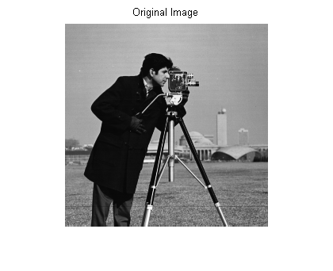
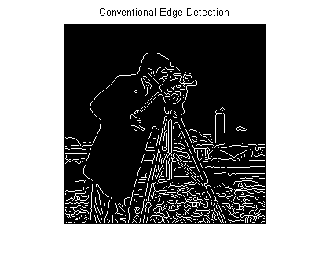
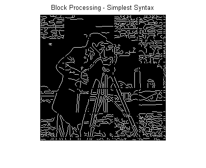
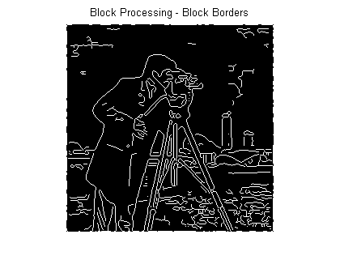
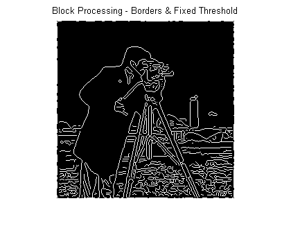

Block Processing Large Images
When working with large images, normal image processing techniques can sometimes break down. The images can either be too large to load into memory, or else they can be loaded into memory but then be too large to process.
To avoid these problems, you can process large images incrementally: reading, processing, and finally writing the results back to disk, one region at a time. The blockproc function helps you with this process. Using blockproc, specify an image, a block size, and a function handle. blockproc then divides the input image into blocks of the specified size, processes them using the function handle one block at a time, and then assembles the results into an output image. blockproc returns the output to memory or to a new file on disk.
This demo illustrates how to use blockproc for a simple image processing task: performing edge detection on a TIFF image. See the documentation for blockproc for detailed syntax information.
First, consider the results of performing edge detection without block processing. This example uses a small image, cameraman.tif, to illustrate the concepts, but block processing is often more useful for large images.
file_name = 'cameraman.tif'; I = imread(file_name); normal_edges = edge(I,'canny'); imshow(I); title('Original Image'); figure imshow(normal_edges); title('Conventional Edge Detection'); 
Now try the same task using block processing. The blockproc function has built-in support for TIFF images, so you do not have to read the file completely into memory using imread. Instead, call the function using the string filename as input. blockproc reads in one block at a time, making this workflow ideal for very large images.
When working with large images you will often use the 'Destination' parameter to specify a file into which blockproc will write the output image. However, in this example you will return the results to a variable, in memory.
This example uses a block size of [50 50]. In general, choosing larger block sizes yields better performance for blockproc. This is particularly true for file-to-file workflows where accessing the disk will incur a significant performance cost. Appropriate block sizes vary based on the machine resources available, but should likely be in the range of thousands of pixels per dimension.
% You can use an anonymous function to define the function handle. The % function is passed a structure as input, a "block struct", with several % fields containing the block data as well as other relevant information. % The function should return the processed block data. edgeFun = @(block_struct) edge(block_struct.data,'canny'); block_size = [50 50]; block_edges = blockproc(file_name,block_size,edgeFun); figure imshow(block_edges); title('Block Processing - Simplest Syntax');
Notice the significant artifacts from the block processing. Determining whether a pixel is an edge pixel or not requires information from the neighboring pixels. This means that each block cannot be processed completely separately from its surrounding pixels. To remedy this, use the blockproc parameter 'BorderSize' to specify vertical and horizontal borders around each block. The necessary 'BorderSize' varies depending on the task being performed.
border_size = [10 10]; block_edges = blockproc(file_name,block_size,edgeFun,'BorderSize',border_size); figure imshow(block_edges); title('Block Processing - Block Borders');
The blocks are now being processed with an additional 10 pixels of image data on each side. This looks better, but the result is still significantly different from the original in-memory result. The reason for this is that the Canny edge detector uses a threshold that is computed based on the complete image histogram. Since the blockproc function calls the edge function for each block, the Canny algorithm is working with incomplete histograms and therefore using varying thresholds across the image.
When block processing images, it is important to understand these types of algorithm constraints. Some functions will not directly translate to block processing for all syntaxes. In this case, the edge function allows you to pass in a fixed threshold as an input argument instead of computing it. Modify your function handle to use the three-argument syntax of edge, and thus remove one of the "global" constraints of the function. Some trial and error finds that a threshold of 0.09 gives good results.
thresh = 0.09; edgeFun = @(block_struct) edge(block_struct.data,'canny',thresh); block_edges = blockproc(file_name,block_size,edgeFun,'BorderSize',border_size); figure imshow(block_edges); title('Block Processing - Borders & Fixed Threshold');
The result now closely matches the original in-memory result. You can see some additional artifacts along the boundaries. These are due to the different methods of padding used by the Canny edge detector. Currently, blockproc only supports zero-padding along the image boundaries.